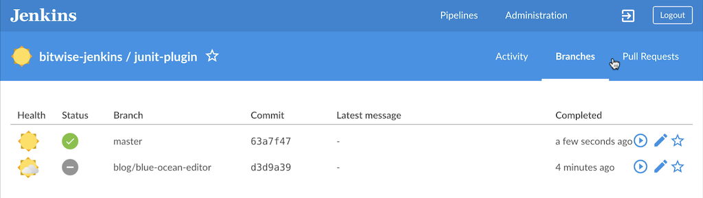

活动视图
Blue Ocean 额的活动视图显示了与流水线相关的所有活动。

导航条
活动视图包括顶部的标准导航条,下面是一个本地导航栏 本地导航条包括:
-
Pipeline Name -点击这里将显示 默认活动选项卡
-
Favorites Toggle - 点击 "Favorite" 符号 (一个轮廓的"☆") 添加分支到收藏列表 并为用户显示在 仪表板上的 "Favorites" 列表。
-
Tabs (Activity, Branches, Pull Requests) - 点击其中一个将显示活动视图的选项卡。
活动
活动视图的默认选项卡, "活动" 选项卡, 显示最新完成或正在运行的运行的列表。 列表中的每一行都显示了运行的 状态, id 号,提交信息, 持续时间, 和运行完成时的状态。 点击Run将会启动该运行的 流水线运行详情。 "In Progress" 运行可以通过点击这个列表中的 "Stop" 符号 (一个圆里面的正方形 "◼" )来中止。 已经完成的运行可以通过点击 "Re-run" 符号(一个逆时针方向的 "↺")来重新运行。 该列表可通过点击列表头部的 "branch"下拉列表中的分支或 pull 请求来筛选。
该列表不允许被编辑或标记为喜欢的运行。 这些操作可以从"branches" 选项卡中完成。
分支
"Branches" 选项卡显示了在当前流水线已完成或正在运行的所有分支的列表。 列表的每一行都代表了源代码控制中的一个分支, [1] 根据最近的运行, 最近运行的状态, id号, 提交信息, 持续时间, 和运行完成时的状态显示 分支的总体健康状态。

点击该列表的一个分支， 为最近完成或在进行中的该分支中的运行提供 流水线运行细节。 "In Progress" runs 可以通过点击 "Stop" 符号 (在一个圆中的 "◼" )从列表中中止。 Pull 请求的最近一次的完成可以通过点击"Play" 符号(一个圆中的 "▶" ) 进行再次运行。 单击"Edit" 符号 (类似于铅笔 "✎")为该分支上的流水线打开 流水线编辑器。 点击 "Favorite" 符号 (一个星的轮廓 "☆")添加分支到收藏列表，为该用户显示在 仪表盘的 "Favorites" 列表z中 。 一个已被收藏的分支会显示一个实心的 "★" 点击它就可以从收藏中移除该分支。
Pull请求
"Pull Requests"选项卡显示了当前已完成或正在运行的流水线的所有pull请求的列表 。 (一些源代码控制系统称之为从 "Merge Requests",而另一些根本不支持这些)。 列表的每一行代表源控制代码的一个pull请求, 显示最新运行的状态, id 号, 提交信息, 持续时间, 以及运行完成时的状态。

Blue Ocean显示从分支中分离的 pull请求, 但是其他情况下的 Pull 请求列表的行为和分支列表相似。 单击该列表中的 pull 请求，为pull请求已完成或正在运行的运行提供了 流水线运行详情。 "In Progress" 运行可以通过点击 "Stop" 符号(一个圆中的 "◼")从列表中中止。
最新完成的Pull请求可以通过点击 "Play" 符号 (一个圆中的三角形 "▶")来再次运行。 Pull 请求不显示 "健康图标"，不能被编辑或标记为喜欢。
| 默认情况下, 当Pull Request 被关闭, Jenkins 将会从Jenkins 中移除流水线(稍后将被清理), 并且不再访问Jenkins来运行该pull请求。 这可以通过更改底层多分支流水线作业的配置来改变。 |